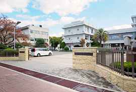

ロケーションLOCATION
SOUTHEAST AREA OF CASTLE
「姫路城」の南東方向に寄り添い、
京都への門を抱いたエリア「城巽」。
「姫路城」南東方向の旧市街地に位置し、
風情豊かな住環境を継承する「城巽（じょうそん）地区」。
内京口門付近
本件の位置する「城巽地区」は、その名の通り姫路城の巽＝辰巳（たつみ）の方向（南東）に位置するエリア。
かつての城下町時代には「姫路城」所縁の士族の邸宅が配され、その風情や由緒を継承することで形成されてきた姫路の旧市街地に属しており、
城東の「五軒邸」、城北の「坊主町」、城西の「嵐山町」と並ぶ閑静な住宅地として知られています。
また、歴史に育まれ、時と空間のおりなす美しいまちづくりを目指す「姫路城周辺地区景観ガイドプラン」の対象地域内であり、
「姫路城」と調和する風格ある景観形成が進められています。
「姫路城」の南東方向を指す「巽（たつみ）」。
「巽」とは方角や時刻を十二支で表した文字で「辰巳」とも書き、時計で言えば4時（辰）と5時（巳）の間となる「南東」の方角のこと。 「城巽」はその文字並びの通り、お城を中心とした南東方向のエリアを指しています。
EDUCATION
「城下町」の風情に「文教」のアカデミズムも漂う
子育てに適したエリア。
確かな学力と人間関係の育成に取り組む
小中一貫教育モデル校「市立白鷺小中学校」が通学区。
通学指定校は姫路市の小中一貫教育推進モデル校として開校した「市立白鷺小中学校」。
「夢抱き 未来に輝く 白鷺っ子」のスローガンの元、小中一貫教育という9年間の連続性を重視・活用し、
その時々の児童・生徒の発達に応じた学力や人間関係力の目標を設定した教育を実践することで、
確かな学力を基盤とした総合的な人間力の育成や、たくましい身体づくりを目指します。
隣接する校舎での教職員の相互乗入授業や小・中学生の合同勉強会、合同行事を開催するなど一貫校ならではの教育活動が大きな魅力です。
市立白鷺小中学校（徒歩12分／約910m）
-
幼保連携型認定こども園ベイカ
（徒歩6分／約410m） -
イーグレ姫路保育園
（徒歩7分／約560m） -
姫路めばえ保育園
（徒歩10分／約790m） -
市立城東幼稚園
（徒歩12分／約960m）
2つのミッションスクールが並び建ち、
かつての古き佳き時代を今に偲ばせる文教地区。
現地近くには2つのミッションスクールが立地。
「賢明女子学院中学校・高等学校」は、中高一貫教育を提供するカトリック系の私立女子中学校・高等学校で、
高等学校は1学年の生徒総数180人のうち20%弱の35名の生徒を募集する準完全中高一貫校です。
その北側に隣接するのが同じくカトリックのミッションスクールである「淳心学院中学校・高等学校」。
大学進学を大切にした細やかなカリキュラムを実施しており、国公立・私立大学進学に力を注いでいます。
-
賢明女子学院中学校・高等学校
（徒歩3分／約200m） -
淳心学院中学校・高等学校
（徒歩6分／約420m） -

県立姫路東高等学校
（徒歩11分／約850m）
知的好奇心を刺激する文化＆レジャー施設
姫路市立美術館
芝生に座ってアート鑑賞ができる赤レンガの美術館
緑に囲まれた煉瓦造の美術館。企画展示室のほか、近代フランス絵画を展示する常設展示室、 館蔵品を無料で公開するコレクションギャラリー、美術図書や雑誌を無料で閲覧できるアートライブラリーがある。 芝生の前庭には13体もの彫刻が点在し、憩いの空間として市民に親しまれている。
10:00～17:00（入館は16:30まで）
休館日／月曜（祝日・休日の場合を除く）年末年始
姫路市立水族館
生き物を身近な目線で観察できる山の上の水族館
ペンギンやヌートリアのエサやりタイムや、エイやサメと直接、素手で触れ合うことができるタッチプールなど、 水の生き物の息遣いを間近に感じる工夫がたくさん。 飼育員さんが豆知識をたくさん教えてくれる「アクアラボ」も子どもたちに人気だ。
姫路市西延末440（手柄山中央公園内）
9:00～17:00（入館は16:30まで）
休館日／火曜日（祝日の場合は翌日）、
12月29日から翌年1月1日まで
姫路市立動物園
姫路城を眺めながらたくさんの動物を眺めよう
姫路城の三の丸広場に隣接するお城の見える動物園には、ゾウやキリンなど動物がたくさん。モルモット、 ヤギ、ヒツジなどの動物と直接ふれあえるコーナー「ふれあい広場」は、動物の説明もあわせて行われ、 1日2回の時間帯には子どもたちでいっぱいになる。

姫路市本町68番地 姫路城東側
9:00～17:00（入園は16:30まで）
休園日／12月29日から翌年1月1日まで
HOSPITAL
頼れる医療機関
各分野が連携して先進の医療を実践する地域の中核病院
独立行政法人
国立病院機構姫路医療センター
姫路城を望む静かな場所にある総合病院。1898年に創設され、 その後1945年に国立姫路病院2004年に独立行政法人国立病院機構 姫路医療センターへと移行し、 現在に至るまで播磨地域の中核的病院とし地域に親しまれている。
2007年には「地域がん診療連携拠点病院」に指定され、兵庫県におけるがん診療の中心的な役割を担い、高度専門的医療を実践する。 最近では、出血や痛みの少ない低侵襲治療に取り組む同院では、 内視鏡手術やカテーテル手術に代表される患者様への負担を減した治療法が実践されている。 呼吸器センター・消化器センター・高精度放射線治療センターという3つのセンターを設けることで、 各分野で内科と外科が連携して診療を提供しているのも特徴だ。
さらには「災害拠点病院」としての機能を持ち、姫路市及びその周辺地域を対象に二次救急を含む救急医療の提供を行う。 さまざまなスタッフが密接に連携することで、日々の救急医療に対応している。
診療科目
呼吸器内科、消火器内科、循環器内科、糖尿病内分泌内科、小児科、消化器外科、乳腺外科、整形外科、形成外科、 脳神経外科、呼吸器外科、皮膚科、泌尿器科、眼科、 耳鼻咽喉科・頭頸部外科・放射線科・リウマチ科・リハビリテーション科・緩和ケア内科・救急科
【外来診療受付時間】月～金曜8:30～11:00
※土・日・祝日及び12月29日から1月3日は全科休診です。
姫路中央病院
診療科目
脳神経外科、外科、神経内科、内科、消化器内科、整形外科、 皮膚科、麻酔科、リハビリテーション科、放射線科、病理診断科
姫路市飾磨区三宅２丁目36番地
【外来受付時間】午前診8:15～11:00（診察開始9:00〜）、
午後診8:15～15:00（診察開始14:00〜）
※日曜・祝祭日、年末年始は休診
城南多胡病院
診療科目
内科、消化器内科、外科、整形外科、リハビリテーション科、禁煙外来
【外来診療時間】
月～金曜9:00～12:30（受付時間8:30〜12:00）、
16:00～18:00（受付時間15:45〜17:30）、
土曜9:00～12:00（受付時間8:30〜11:30）
やまだ皮膚科クリニック
日本皮膚科学会認定皮膚科専門医及び日本アレルギー学会認定アレルギー専門医の資格と、 豊富な経験を持つ医師が患者様それぞれの症状に応じて、丁寧にヒアリングしたうえで、適切な診断・治療を進めていく。 アレルギー検査、皮膚の日帰り手術、巻き爪治療も行っている。
診療科目
皮膚科、アレルギー科、皮膚外科、形成外科
姫路市南町5 モルティひめじ1F
【診療時間】9:00〜12:30、15:30〜19:00、
土曜午後13:30～17:00
【休診日】水曜午後、日曜、祝日
西川レディースクリニック
姫路市駅前町188-1 ピオレ姫路6F
【診療時間】14:00～19:00※木曜、日曜・祝日は休診
最上クリニック
【診療時間】平日9:00～12:30、15:00～18:30、
土曜9:00～12:00 ※予約優先制
※水曜、日曜・祝日は休診
テラッソデンタルクリニック
「患者様のお口を通じて、患者様の人生を豊かにする」という理念のもと、 日・祝日も診療している。予防歯科からインプラントまで様々な治療相談が可能。 「歯医者 = 痛い」という固定観念を払拭するため、環境整備、 痛みを伴いやすい麻酔投与の工夫、痛みの少ないレーザーによる治療などにも積極的に取り組む。
【診療時間】10:00～13:00、15:00～20:00
※休診日なし※日曜・祝日は～18:00までの診療
SHOPPING
快適な姫路ライフに必要となる
多彩なシーンやニーズに応えるために。
テラッソ姫路 （徒歩15分／約1,160m）
姫路駅前再開発計画「キャスティ21計画」のコアゾーンBブロックにあり、地上8階で高さは37.9m。4階から7階を占める中核施設で日本最大級となる12スクリーン、約2,000人が収容できる客席を有した「アースシネマズ姫路」ではご家族でロードショーも満喫できます。

ピオレ姫路 （徒歩17分／約1,340m）
関西初や姫路初の店舗を含む約200店舗が集う大規模ショッピングセンター。本館、ヤング館、ごちそう館、おみやげ館の4館で構成され、本館は姫路城をモチーフにデザインされた外観で、屋上に設けられた展望デッキからは、姫路城はじめ姫路市がいが一望できます。
-
フェスタビル
（徒歩17分／約1,350m） -
山陽百貨店
（徒歩18分／約1,380m） -
イーグレひめじ
（徒歩7分／約560m） -
ボンマルシェ大手前店
（徒歩11分／約850m）
SHOPPINGSTREET
JR「姫路」駅北側市街地に広がる、
地域に根付いた大型商店街の数々。
本町商店街（徒歩9分／約660m）
「シエリア姫路城 東」現地からは神姫バス「姫路郵便局前」バス停へ徒歩3分、 そこからアクセスや利便性の集積した姫路駅前にリンクする「姫路駅（北口）」バス停へ7分。 バス便利用によって暮らしの幅が大きく広がりゆとりが生まれます。
みゆき通り商店街（徒歩10分／約800m）
「みゆき通り商店街」は大手前通りのひとつ東側にある商店街。駅前商店街の中でももっとも道幅が広く賑わっており、 普段使いの生活用品からカフェやお食事処をはじめ、 観光客も利用できるお土産屋さんまで、バラエティに富んだお店が新旧混在しています。
西二階町商店街（徒歩10分／約770m）
「西二階町商店街」は、市街を東西に横切る商店街。靴屋さんや着物屋さんなど昔ながらのお店が立ち並ぶ懐かしい雰囲気が魅力で、 老舗の専門店などが軒を連ね、貫禄のあるお店も目立ちます。 喫茶店好きの間でも人気の高い老舗カフェ「Ｇセブン」もあります。
市民会館前通り商店街（徒歩9分／約660m）
「市民会館前通り商店街」は、「姫路市市民会館」に続く商店街。 「シエリア姫路城 東」に最も近く、商店街には屋根があるので、雨天や夏の日差しが強い日でも、 現地からここを起点に「西二階町商店街」や「おみぞ筋商店街」を通って行けば快適に駅前までリンクできます。
パステルおみぞ筋商店街（徒歩12分／約920m）
「おみぞ筋商店街」は「みゆき通り商店街」のすぐ東側を平行に南北に通る商店街。 ファッションや生活用品、おしゃれカフェ、隠れ家的なダイニングバーなど新旧様々な業種のお店が立ち並んでいます。 交差点のアーケードは特別大きく装飾も凝っていて印象的です。
LIFE INFORMATION
交通機関・公共施設
-
JR播但線「京口」駅
徒歩8分／約640m
-
JR「姫路」駅
徒歩18分／約1,400m
-
山陽電車「姫路」駅
徒歩18分／約1,400m
-
姫路市役所 中央支所
徒歩11分／約880m
-
すまいるステーション駅前市役所
徒歩19分／約1,480m
-
中央保健センター
徒歩6分／約460m
-
姫路市市民会館
徒歩8分／約580m
-
姫路五軒邸郵便局
徒歩5分／約390m
-
姫路郵便局
徒歩5分／約330m
-
京口交番
徒歩6分／約470m
-
姫路警察署
徒歩18分／約1,420m
-
市立東光児童センター
徒歩9分／約720m
-
市立東公民館
徒歩11分／約810m
-
市立図書館東光分館
徒歩11分／約810m
金融機関
-
姫路信用金庫 東支店
徒歩8分／約640m
-
但陽信用金庫 姫路支店
徒歩10分／約730m
-
兵庫県信用組合 姫路支店
徒歩10分／約740m
-
播州信用金庫 東支店
徒歩11分／約840m
-
三井住友銀行 姫路支店
徒歩12分／約950m
-
西兵庫信用金庫 京口支店
徒歩13分／約1,000m
-
みずほ銀行 姫路支店
徒歩14分／約1,050m
-
三菱UFJ銀行 姫路支店
徒歩14分／約1,070m
-
みなと銀行 姫路支店
徒歩15分／約1,200m
-
りそな銀行 姫路支店
徒歩16分／約1,260m
教育施設
-
市立城陽幼稚園
徒歩12分／約60m
-
市立城東幼稚園
徒歩12分／約960m
-
市立城東保育所
徒歩12分／約960m
-
幼保連携型認定こども園 ベイカ
徒歩6分／約410m
-
イーグレ姫路保育園
徒歩7分／約560m
-
姫路めばえ保育園
徒歩10分／約790m
-
白鷺小学校学童保育園
徒歩17分／約1,330m
-
義務教育学校姫路市立白鷺小中学校
徒歩12分／約910m
-
賢明女子学院 中学・高等学校
徒歩3分／約200m
-
淳心学院 中学・高等学校
徒歩6分／約420m
-
県立 姫路東高等学校
徒歩11分／約850m
-
姫路医療専門学校
徒歩15分／約1,150m
病院･医院
-
鈴木・石川歯科
徒歩4分／約640m
-
たうち歯科クリニック
徒歩4分／約1,400m
-
松井・中村歯科医院
徒歩4分／約1,400m
-
ふじしろ歯科クリニック
徒歩5分／約880m
-
ナカムラ医院
徒歩5分／約1,480m
-
国立病院機構 姫路医療センター
徒歩6分／約460m
-
尾上眼科
徒歩7分／約580m
-
川崎医院
徒歩8分／約390m
-
石川医院
徒歩9分／約330m
-
ほしたにクリニック
徒歩9分／約470m
-
三輪整形外科
徒歩10分／約1,420m
-
松浦病院
徒歩11分／約720m
-
Koba レディースクリニック
徒歩13分／約810m
ショッピング
-
ボンマルシェ 大手前店
徒歩11分／約850m
-
TERASSO（テラッソ）
徒歩15分／約1,160m
-
マックスバリュ
徒歩15分／約1,160m
-
ニトリ デコホーム
徒歩15分／約1,160m
-
デイリーファッションしまむら
徒歩15分／約1,160m
-
エディオン 姫路駅前店
徒歩15分／約1,190m
-
ピオレ姫路
徒歩17分／約1,340m
-
フェスタビル
徒歩17分／約1,350m
-
グランフェスタ
徒歩16分／約1,260m
-
山陽百貨店
徒歩18分／約1,380m
-
ファミリーマート 姫路壱丁町店
徒歩3分／約220m
-
ローソン 姫路五軒邸店
徒歩4分／約270m
-
本町商店街
徒歩9分／約660m
-
市民会館前通り商店街
徒歩9分／約660m
-
二階町商店街
徒歩10分／約770m
-
みゆき通り商店街
徒歩10分／約800m
-
パステルおみぞ筋商店街
徒歩12分／約920m
-
スギ薬局 姫路中央店
徒歩11分／約810m
-
コーナンPRO 姫路駅東店
徒歩分17／約1,290m
-
マックスバリュ 宮西店
徒歩17分／約1,320m
-
ジョーシン 姫路東店
徒歩17分／約1,350m
-
ナフコ ツーワンスタイル姫路店
徒歩23分／約1,790m
塾・教室
-
KUMON 坂田町教室
徒歩6分／約480m
-
志文舎 姫路本町校
徒歩7分／約510m
-
播磨塾
徒歩9分／約700m
-
J教育セミナー 大手前校
徒歩10分／約750m
-
岡村ゼミナール 姫路校錦町教室
徒歩10分／約760m
-
東進衛星予備校 姫路中央校
徒歩10分／約800m
-
代ゼミサテライン予備校
A-PLUSみゆき通り校徒歩11分／約810m
-
エディック 姫路本部校
徒歩12分／約910m
-
浜学園 姫路教室
徒歩13分／約980m
グルメ・レストラン
-
かごの屋 姫路市市民会館前店
徒歩8分／約580m
-
焼肉 かもめ屋 姫路本店
徒歩4分／約300m
-
カフェレストラン ブラジル 東店
徒歩5分／約360m
-
姫路発タマゴサンドのお店
ひめたま 坂田町店徒歩5分／約360m
-
インド料理レストラン ガネーシャ
徒歩5分／約360m
-
和ダイニング 三日湖
徒歩4分／約310m
-
サブウェイ イーグレひめじ店
徒歩7分／約560m
-
千姫茶屋
徒歩7分／約560m
-
しゃぶしゃぶレストラン
しゃぶ葉 姫路幸町店徒歩10分／約800m
-
手づくりパンの店 マリーポアラーヌ
徒歩12分／約930m
-
ロイヤルホスト 姫路本町店
徒歩15分／約1,160m
-
高級「生」食パン専門店
乃が美 はなれ徒歩16分／約1,280m
-
カフェレストラン ガスト 姫路駅前店
徒歩17分／約1,350m
-
カプリチョーザ 姫路フェスタ店
徒歩17分／約1,350m
-
姫路地下街 グランフェスタ
徒歩16分／約1,260m
公園・スポーツ・ミュージアム他
-
南五軒邸公園
徒歩4分／約320m
-
北五軒邸公園
徒歩4分／約270m
-
京口公園
徒歩8分／約590m
-
城見台公園
徒歩6分／約430m
-
大手前公園
徒歩6分／約440m
-
姫路城
徒歩9分／約700m
-
姫路市立動物園
徒歩8分／約640m
-
ニッケゴルフ倶楽部 京口センター
徒歩11分／約880m
-
フィットネスクラブ レフコ 姫路店
徒歩14分／約1.080m
-
ホームランドーム 姫路
徒歩19分／約1.520m
-
エニタイムフィットネス 姫路
徒歩19分／約1.520m
-
アースシネマズ姫路
徒歩15分／約1,160m
-
ホテルモントレ姫路
徒歩17分／約1,350m
-
市立美術館
徒歩9分／約710m
-
兵庫県立歴史博物館
徒歩12分／約890m
-
播磨國総社 射楯兵主神社
徒歩5分／約330m
-
カトリック姫路教会
徒歩5分／約380m
ACCESS MAP
ルート検索シミュレーション
「シエリア姫路城 東」から目的地までの距離を検索してみましょう。
- ※徒歩分数は80mを1分として算出しています。※交通所要時間は日中平常時のもので、時間帯により多少異なります。また、乗り換え・待ち時間は含みません。所要時間は2019年10月現在のもので、以降鉄道会社によって変更になる場合があります。※アクセス図は概略図ですので省略されている駅・路線等があります。※掲載の環境写真は2019年6月に撮影したものです。※掲載の情報は、2019年9月時点のもので変更になる場合があります。